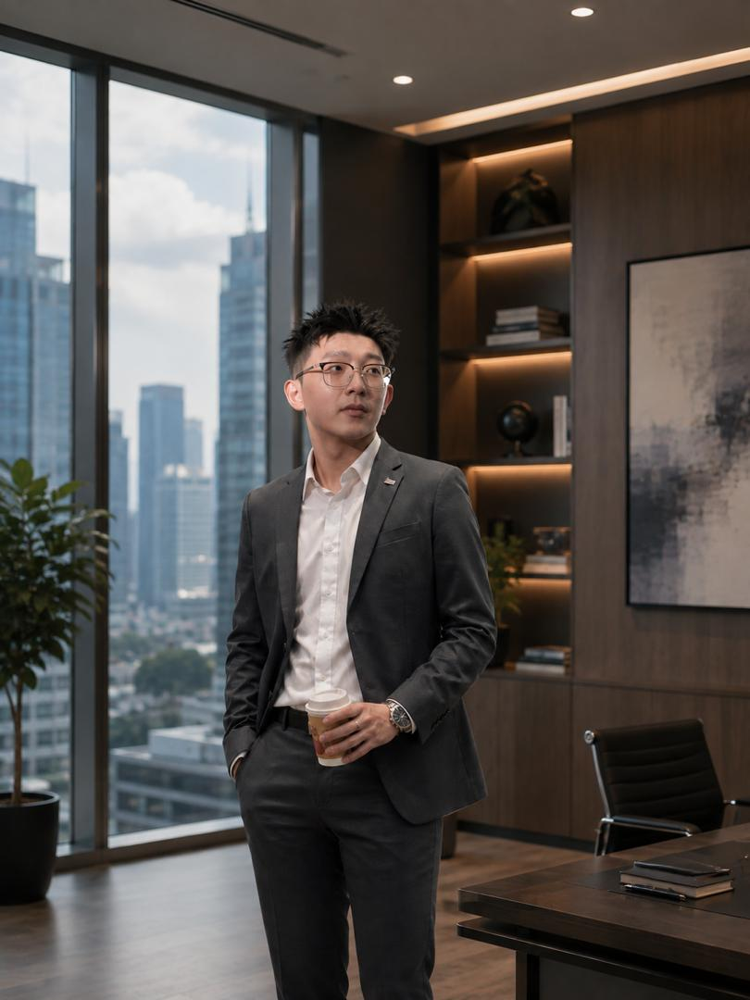

01
Private equity monitoring
Monitoring metrics, dashboards and cash-flow projections for a new PE book, built on LP data experience: capital calls, distributions, NAV reconciliation and IRR.
Private equity & investment analytics · PE cash-flow projection
I'm Yi Shien, a Business Analyst at Opus Asset Management covering private equity, life settlements, multi-asset and bond funds. I'm building the investment monitoring metrics, dashboards and cash-flow projections for the firm's newly launched private equity offering, and automating the reporting behind it. Before Opus, I managed private-markets data for S&P Global's largest institutional client portfolio, worth more than US$550B in AUM.

Now · Aug 2026 – present
Opus has launched private equity as a new asset class. I'm building the tools that let the team monitor it, plan for it and report on it.
A simple projection of a US$100M commitment over a 12-year fund life (Takahashi–Alexander model). Move the sliders to see how the cash flows change.
For illustration only. These are generic model assumptions, not Opus data or any real fund.
I've worked across the whole chain: a trading desk, operations, LP-side data at S&P Global, and now the asset-manager side at Opus.
Monitoring metrics, dashboards and cash-flow projections for a new PE book, built on LP data experience: capital calls, distributions, NAV reconciliation and IRR.
Automated peer performance comparison, attribution and distribution reports built from scratch, and operations workflows with fewer manual steps.
Fluent across the major market and private-markets data platforms, with trading-desk experience and years of investor education behind the numbers.
From my time at S&P Global
Select a stage to see what it involves and why limited partners (LPs) care about it.
From retail markets to institutional private equity.
Covering private equity, life settlements, multi-asset and bond funds. Building investment monitoring, dashboards and cash-flow projections for the firm's new private equity asset class, and automating performance and operations reporting.
Managed private-markets investment data for APAC institutional investors, including retirement funds, insurers, trust banks and development banks.
Rotated through Client Management, Trading & Dealing and Financial Operations, then documented the end-to-end operating workflow from scratch.
Ran daily technical analysis on the most-traded stocks, briefed 40+ traders on market news and supported execution of 100+ orders a day.
Founded a financial-education platform that grew to 2,600+ followers. Managed 100+ client relationships with 90% retention.
Quantitative finance training, supported by professional qualifications.
I've spent years building finance communities and improving financial literacy in Malaysia.
Founded and led the Malaysia Investment Symposium. Built a 100+ committee, drew participants from 23 universities and raised RM200K in sponsorship. Earlier, grew the Bursa Young Investor Club at TARUC Penang from 67 to 500 members.
Guest panelist at the Securities Commission Malaysia event marking BYIC's 10th anniversary. Also a guest speaker at national youth trading competitions.
Malaysian Finance Expert Convention (national level). Full scholarships for both my diploma and degree.
"If the plan doesn't work, change the plan, but never change the goal."The principle I've led teams by, from student symposiums to institutional client delivery
Happy to connect with fellow investment professionals, and open to collaborations and speaking invitations. I usually reply within 1–2 business days.